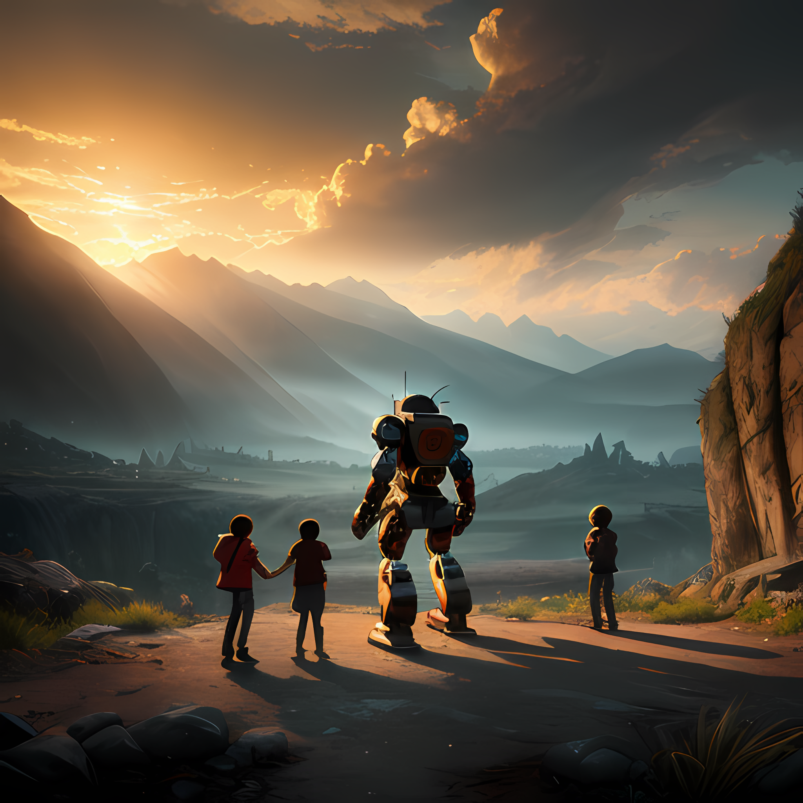
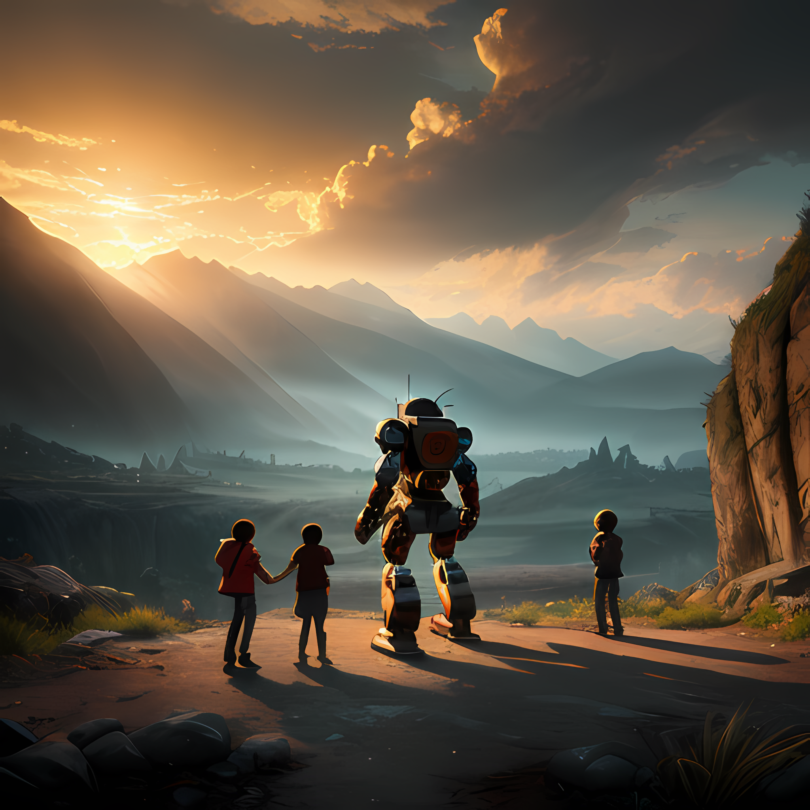
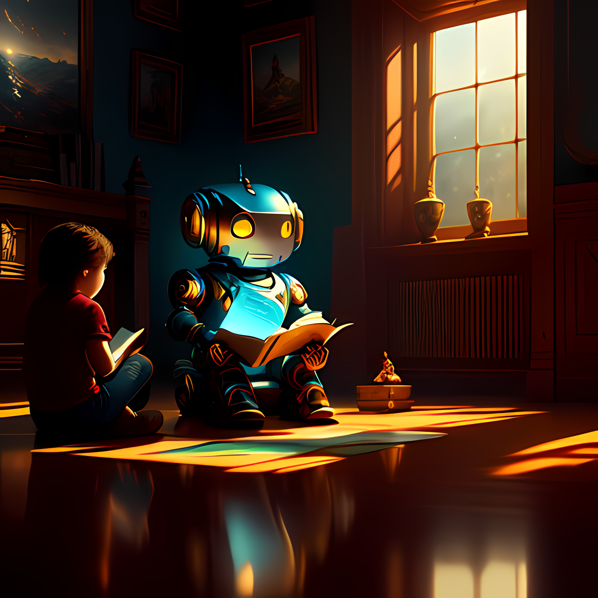

Making AI LIVE and Social
OuterMind.AI is a Federated Social Network for AI Creators
and their audience. Each Hub in the network is a Shared Cloud Desktop
where creators have their own customized environment and can engage with their
live audience, by sharing keyboard, mouse, microphone, and speakers.
It enables AI creators to turn their AI workflow into a
live, participatory experience.
Features
- Creators can use any AI app, such as ChatGPT, MidJourney, RunwayML, Eleven Labs, and any other apps, as well as the latest experimental models, using their cloud-based Brave browser and Linux terminal, in a way that allows the audience to engage in the creative process by securely sharing the cloud desktop's keyboard and mouse to interact with the various AI apps/models, while seeing and hearing the AI generated output, as a group.
- The participants and the creator/host can communicate with each other in both audio and chat.
- Creators can transfer media from/to any app running in the shaared cloud desktop, including text, images and videos produced by generative AIs. They can also record and upload voice samples for AI voice cloning AIs.
- The creator/host can stream the live participatory sessions to Twitch or Youtube, right from their browser (no other app needed.)
Participatory Culture for Generative AI

We will be hosting AI Artists to perform a live Masterclass on Generative AI, using a live, participatory format, and stream the entire session to Youtube, where anyone can watch it. Users will be able to follow their favorite creators and be notified of live events, with the option to participate or watch live.
Follow us at @outermind_ai (twitter)